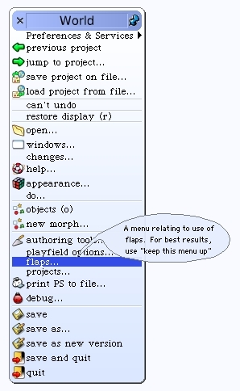
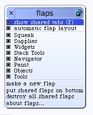

A New Project
The new World opens up and you are presented with a blank environment, except for the flaps. We will not need the flaps so we can turn them off for at least this project World.
From the "flaps..." menu, de-select the "show shared tabs" option.
 The flaps disappear. We will now go back to the previous world and rename this project. Choose the "previous project" entry from the World menu.